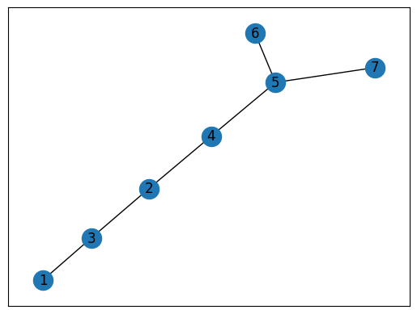
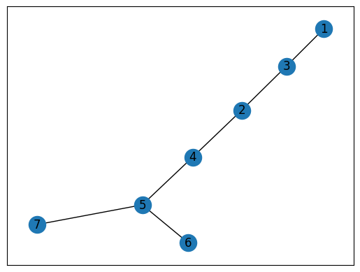
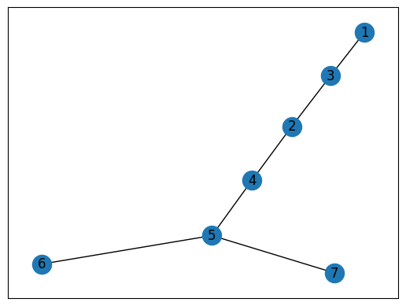
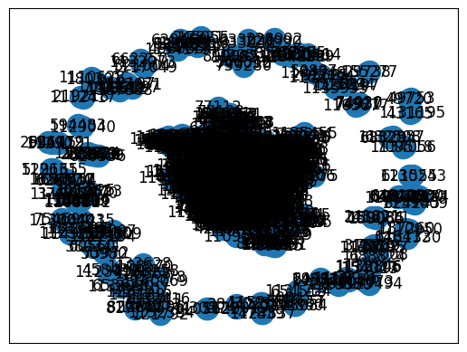

import networkx as nx
import matplotlib.pyplot as plt
edges = [[1,3],[2,3],[2,4],[4,5],[5,6],[5,7]]
G = nx.from_edgelist(edges)
preds = nx.resource_allocation_index(G,[(1,2),(2,5),(3,4)])
print(list(preds))[(1, 2, 0.5), (2, 5, 0.5), (3, 4, 0.5)]import networkx as nx
import matplotlib.pyplot as plt
edges = [[1,3],[2,3],[2,4],[4,5],[5,6],[5,7]]
G = nx.from_edgelist(edges)
preds = nx.resource_allocation_index(G,[(1,2),(2,5),(3,4)])
print(list(preds))[(1, 2, 0.5), (2, 5, 0.5), (3, 4, 0.5)]노드 쌍의 지원 할당 지수 목록
노드 쌍 사이에 간선이 있을 확률 0.5
- 오류나넹.. 아래와 같이 코드 나와야함
draw_graph(G)![](.png)
\[jaccard Coefficient(u,v) = \dfrac{|N(u) \cap N(v)|}{|N(u) \cup N(v)|}\]
import networkx as nx
edges = [[1,3],[2,3],[2,4],[4,5],[5,6],[5,7]]
G = nx.from_edgelist(edges)
preds = nx.jaccard_coefficient(G,[(1,2),(2,5),(3,4)])
print(list(preds))
draw_graph(G)[(1, 2, 0.5), (2, 5, 0.25), (3, 4, 0.3333333333333333)]TypeError: '_AxesStack' object is not callable<Figure size 640x480 with 0 Axes>- 위 함수는 자꾸 오류가 나서 밑에 처럼 바꿔서 진행
import networkx as nx
import matplotlib.pyplot as plt
def draw_graph(G):
nx.draw_networkx(G, with_labels=True)
plt.show()
edges = [[1,3],[2,3],[2,4],[4,5],[5,6],[5,7]]
G = nx.from_edgelist(edges)
preds = nx.jaccard_coefficient(G,[(1,2),(2,5),(3,4)])
print(list(preds))
draw_graph(G)[(1, 2, 0.5), (2, 5, 0.25), (3, 4, 0.3333333333333333)]
[(1, 2, 0.5), (2, 5, 0.25), (3, 4, 0.3333333333333333)]
\[Community Common Neighbor(u,v)=|N(v) \cup N(u)| + \sum_{w in N(v) \cap N(u)} f(w)\]
import networkx as nx
edges = [[1,3],[2,3],[2,4],[4,5],[5,6],[5,7]]
G = nx.from_edgelist(edges)
# 1,2,3은 0이라는 커뮤니티
G.nodes[1]["community"] = 0
G.nodes[2]["community"] = 0
G.nodes[3]["community"] = 0
# 4,5,6,7은 1이라는 커뮤니티
G.nodes[4]["community"] = 1
G.nodes[5]["community"] = 1
G.nodes[6]["community"] = 1
G.nodes[7]["community"] = 1
preds = nx.cn_soundarajan_hopcroft(G,[(1,2),(2,5),(3,4)])
print(list(preds))
nx.draw_networkx(G)[(1, 2, 2), (2, 5, 1), (3, 4, 1)]
nx.degree_pearson_correlation_coefficient?Signature: nx.degree_pearson_correlation_coefficient( G, x='out', y='in', weight=None, nodes=None, ) Docstring: Compute degree assortativity of graph. Assortativity measures the similarity of connections in the graph with respect to the node degree. This is the same as degree_assortativity_coefficient but uses the potentially faster scipy.stats.pearsonr function. Parameters ---------- G : NetworkX graph x: string ('in','out') The degree type for source node (directed graphs only). y: string ('in','out') The degree type for target node (directed graphs only). weight: string or None, optional (default=None) The edge attribute that holds the numerical value used as a weight. If None, then each edge has weight 1. The degree is the sum of the edge weights adjacent to the node. nodes: list or iterable (optional) Compute pearson correlation of degrees only for specified nodes. The default is all nodes. Returns ------- r : float Assortativity of graph by degree. Examples -------- >>> G = nx.path_graph(4) >>> r = nx.degree_pearson_correlation_coefficient(G) >>> print(f"{r:3.1f}") -0.5 Notes ----- This calls scipy.stats.pearsonr. References ---------- .. [1] M. E. J. Newman, Mixing patterns in networks Physical Review E, 67 026126, 2003 .. [2] Foster, J.G., Foster, D.V., Grassberger, P. & Paczuski, M. Edge direction and the structure of networks, PNAS 107, 10815-20 (2010). File: ~/anaconda3/envs/py38/lib/python3.8/site-packages/networkx/algorithms/assortativity/correlation.py Type: function
nx.draw_networkx\[Community Common Neighbor(u,v) = \sum_{w in N(v) \cap N(u)} \dfrac{f(w)}{|N(w)|}\]
import networkx as nx
edges = [[1,3],[2,3],[2,4],[4,5],[5,6],[5,7]]
G = nx.from_edgelist(edges)
G.nodes[1]["community"] = 0
G.nodes[2]["community"] = 0
G.nodes[3]["community"] = 0
G.nodes[4]["community"] = 1
G.nodes[5]["community"] = 1
G.nodes[6]["community"] = 1
G.nodes[7]["community"] = 1
preds = nx.ra_index_soundarajan_hopcroft(G,[(1,2),(2,5),(3,4)])
print(list(preds))
draw_graph(G)[(1, 2, 0.5), (2, 5, 0), (3, 4, 0)]
주어진 그래프에 대한 각 노드 쌍을 특징 벡터(x)로 표현
클래스 라벨(y)를 해당 노드 쌍 각각에 할당
- 전체 프로세스
1 그래프 G의 각 노드에 대해 해당 임베딩 벡터를 node2vec 알고리즘 사용해 계산
2 그래프 가능한 모든 노드 쌍에 대해 edge2vec알고리즘 사용해 임베딩 계산
- 데이터셋: cora
import networkx as nx
import pandas as pd
edgelist = pd.read_csv("cora.cites", sep='\t', header=None, names=["target", "source"])
G = nx.from_pandas_edgelist(edgelist)
draw_graph(G)
훈련 및 테스트 데이터셋에서 그래프 G의 실제 노드 쌍을 나타내는 집합+ G 실제 노드를 나타내지 않는 노드 쌍도 포함
양의 인스턴스(클래스 라벨1) : 실제 간선 나타내느 ㄴ쌍
음의 인스턴스(클래스 라벨0) : 실제 간선을 나타내지 않는 쌍
from stellargraph.data import EdgeSplitter
edgeSplitter = EdgeSplitter(G)
graph_test, samples_test, labels_test = edgeSplitter.train_test_split(
p=0.1, method="global"
)2023-04-06 22:36:33.732989: I tensorflow/core/platform/cpu_feature_guard.cc:193] This TensorFlow binary is optimized with oneAPI Deep Neural Network Library (oneDNN) to use the following CPU instructions in performance-critical operations: AVX2 FMA
To enable them in other operations, rebuild TensorFlow with the appropriate compiler flags.** Sampled 527 positive and 527 negative edges. **graph_test 모든 노드 포함, 간선의 부분 집합만 포함하는 원본 그래프의 부분 집합
sample_test 각각의 노드 쌍 포함, 실제 간선을 나태나는 노드쌍과 실제 모서리를 나타내지 않는 노드 쌍이 포함
label_test sample_test와 같은 길이의 벡터. 0(샘플테스트 백터에서 음의인스터스를 나타내는 위치)또는 1(양의 인스턴스 위치)만 포함
edgeSplitter = EdgeSplitter(graph_test, G)
graph_train, samples_train, labels_train = edgeSplitter.train_test_split(
p=0.1, method="global"
)** Sampled 475 positive and 475 negative edges. **from node2vec import Node2Vec
from node2vec.edges import HadamardEmbedder
node2vec = Node2Vec(graph_train) # 각 노드에 대한 임베딩 생성
model = node2vec.fit()
edges_embs = HadamardEmbedder(keyed_vectors=model.wv) #훈련세트에 포함된 각 노드 쌍의 임베딩 생성 -> 모델 학습 위한 특징 벡터로 사용
train_embeddings = [edges_embs[str(x[0]),str(x[1])] for x in samples_train]Generating walks (CPU: 1): 100%|██████████| 10/10 [00:04<00:00, 2.05it/s]test_embeddings = [edges_embs[str(x[0]),str(x[1])] for x in samples_test]from sklearn.ensemble import RandomForestClassifier
rf = RandomForestClassifier(n_estimators=1000)
rf.fit(train_embeddings, labels_train);from sklearn import metrics
y_pred = rf.predict(test_embeddings)
print('Precision:', metrics.precision_score(labels_test, y_pred))
print('Recall:', metrics.recall_score(labels_test, y_pred))
print('F1-Score:', metrics.f1_score(labels_test, y_pred))Precision: 0.8952380952380953
Recall: 0.713472485768501
F1-Score: 0.7940865892291447